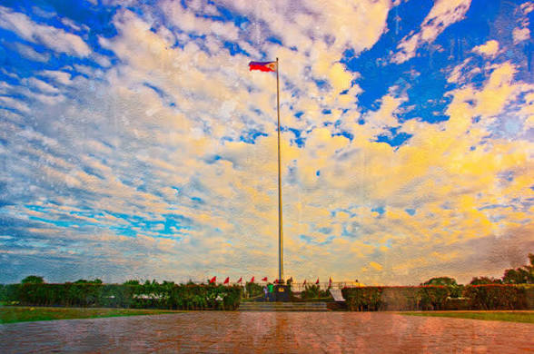

🗺️ Imus Heritage Park: Sights and Visiting |
| 🏠 Home | 📜 History | 🗺️ Sights and Visiting |
 |
| 👀 What to See | |
|---|---|
| ✨ Sight | 📝 About |
| 🚩 The Giant Flagpole | The tallest feature of the park, about 35 meters (115 feet) high. It was originally the Independence Flagpole at Rizal Park in Manila and was relocated to Imus. |
| 🏛️ National Flag Shrine | The main memorial of the park, honoring the Battle of Alapan and the first raising of the flag. |
| 🕊️ Sanctum of Katipunan Flags | Unveiled in 2019 at the shrine to honor the many banners flown by Katipunan revolutionaries. |
| 🗽 Inang Laya | A 10-meter sculpture standing at the center of the amphitheater. |
| 🎭 The Amphitheater | An open performance space where programs and Flag Day events are held. |
| 🪧 Markers and Grounds | Historical markers and open grounds on the site of the 1898 battle. |
| 🗽 About Inang Laya | |
|---|---|
| 📖 Meaning | "Mother of Freedom" |
| 📏 Height | 10 meters (about 33 feet) |
| 🎨 Artist | Visual artist Sandro Pakingan Castrillo |
| 📅 Introduced | 2020 |
| 🎉 Formally inaugurated | May 28, 2023 |
| 📍 Location | Center of the park's amphitheater |
| 🚩 About the Flagpole | |
|---|---|
| 📏 Height | About 35.05 meters (115 feet) |
| 🏠 Original home | Rizal Park (Luneta), Manila, where it served as the Independence Flagpole |
| 📍 Now | Imus Heritage Park, beside the National Flag Shrine |
| 💡 Why it matters | Moving it to Alapan puts a piece of national heritage right where the flag was first raised in victory. |
| 🎉 Events and Best Time to Go | |
|---|---|
| 📅 May 28 | Anniversary of the Battle of Alapan and the opening of National Flag Days. This is the busiest and most festive day. |
| 📅 May 28 to June 12 | National Flag Days, a period of flag-related activities across the country. |
| 📅 June 12 | Independence Day, which ends the Flag Days period. |
| 🌅 Other days | A quieter visit, good for reading the markers and taking photos. |
| 🚶 Visiting Information | |
|---|---|
| 📍 Address | Barangay Alapan 2-A, Imus, Cavite, Philippines |
| 🧭 Coordinates | About 14.404° N, 120.915° E |
| 🚌 Getting there (2014 account) | A travel blog from 2014 described reaching the park by tricycle from Patindig Araw in Imus, or from the Kalayaan junction in Barangay Potol, Kawit. Roads and transport may have changed since then. |
| ℹ️ Before you go | Opening hours, entrance rules, and routes can change, so check with the Imus city government or a current map app first. |
| 🎒 Tips for Visitors |
|---|
| 💧 Bring water and wear a hat or use an umbrella, as much of the park is open ground. |
| 🌅 Go in the morning to avoid the afternoon heat. |
| 👟 Wear comfortable shoes, because there is a lot of walking. |
| 📷 Bring a camera or phone for the flagpole and the Inang Laya statue. |
| 🪧 Take time to read the markers to understand what happened here. |
| 🗓️ If you want the full celebration, plan your trip for May 28. |
| 📍 Other Places in Imus | |
|---|---|
| ⛪ Imus Cathedral | The cathedral of the Diocese of Imus, with Our Lady of the Pillar as patron saint. |
| 🏛️ Imus Plaza | Home of the General Licerio Topacio Monument. |
| ⚔️ Battle of Imus Monument | Commemorates the September 1896 victory. |
| 🏢 Imus City Hall | The seat of the city government. |
| 🖼️ Imus Historical Museum | Tells the city's story, including scenes from the revolution. |
| ❓ Quick FAQ | |
|---|---|
| What happened here? | The Battle of Alapan on May 28, 1898, a Filipino victory over Spanish troops. |
| Why is Imus called the Flag Capital? | Because the flag was first unfurled in victory after this battle. |
| Where did the flagpole come from? | It was the Independence Flagpole at Rizal Park in Manila. |
| Is it a protected site? | Yes, it was declared a National Historic Landmark in 1993. |
| Who made Inang Laya? | Visual artist Sandro Pakingan Castrillo. |
| When was the park opened? | May 28, 2014. |
| 📚 Sources Used |
|---|
| Wikipedia: Imus Heritage Park, Imus, and Battle of Alapan |
| Independence Day PH: Battle of Alapan and the Proclamation of Philippine Independence |
| Maritime Review PH: The Battle of Alapan, Philippine Flag Day |
| Schadow1 Expeditions: Imus Heritage Park (2014) |
| Inquirer: Looking Back, Two Aguinaldo documents in Tagalog |
| ⬅️ Previous page: History | 🏠 Back to Home |